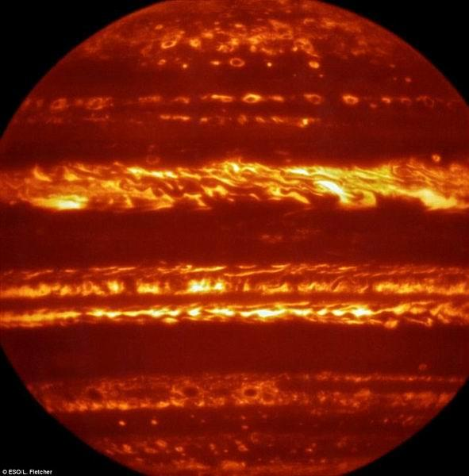

最新红外图像呈现木星犹如一颗“火焰星球”

如图所示，这是欧洲南方天文台甚大望远镜使用VISIR热像仪拍摄的木星红外图像，木星仿佛是一颗“火焰星球”。
腾讯太空讯 据英国每日邮报报道，目前，最新高分辨率热红外波长图像显示木星神秘的气候类型，整个星球仿佛释放着炽热火焰。
该图像发布在美国宇航局“朱诺号”探测器抵达木星之前的一个星期，木星图像揭晓了木星动态大气层中的温度、成分和云层覆盖范围，显示出巨大风暴、旋涡类型如何勾勒出这颗巨型气态行星的外观。
这张高分辨率木星地图是由欧洲南方天文台甚大望远镜(VLT)使用最新升级的热像仪(VISIR)拍摄的，此次天文观测活动是在2016年2月和6月之间进行的，它描述出“朱诺号”探测器抵达之前木星大气层状况。
英国莱斯特大学利-弗莱彻(Leigh Fletcher)博士说：“我们使用一种叫做‘幸运成像’技术，从木星短视频中提取个别清晰图像，‘冻结’大气层中涡旋运动，从而形成木星云层的最新详细状况。在热红外波长范围内，木星云层轮廓呈现在内部发光的行星背景之下。”
弗莱彻博士和研究同事还使用美国宇航局红外望远镜装置(IRTF)的TEXES光谱仪绘制了木星的变化外形，研究小组在不同波长范围下进行观测，对木星大气层云层类型和不同特征进行了优化处理，建立了从地球观测角度的首张木星全球光谱地图。（悠悠/编译）